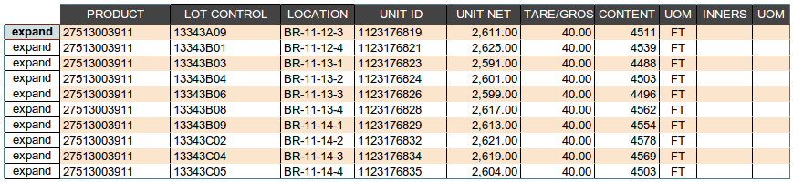
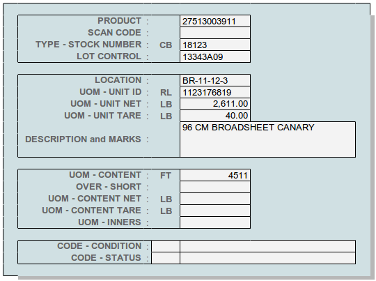
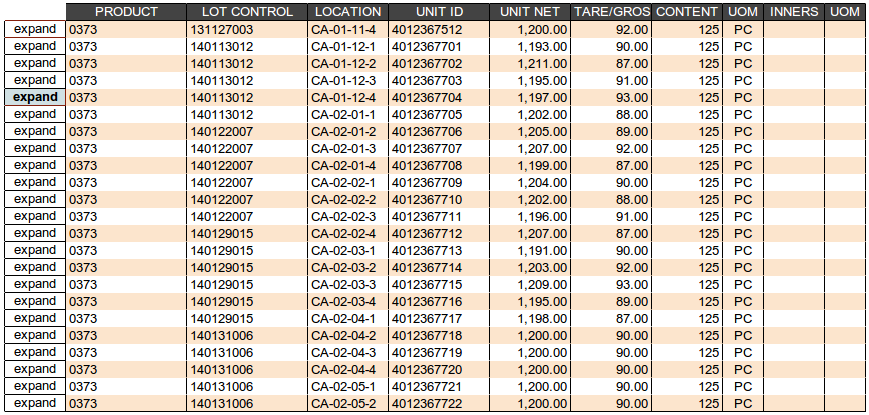
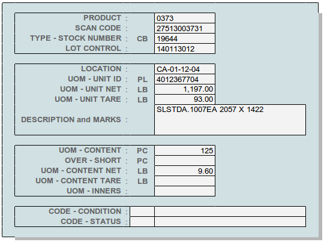

Transaction Line Entry¶
Transaction lines are displayed and entered in a multi-line list, where not all of the entries for a line are displayed. An expanded view of an individual line displays the additional entries where entry or review requires information differing from the product setup defaults.
The first entry example is paper rolls, where each roll is a unit and the roll length is recorded as content in linear feet. The list view shows all entered information, other data in the expanded detail is filled from product defaults.
 The second example shows a mixed pallet, where no product/lot information is entered on the unit line. Subsequent lines for the same unit have products with case and inner pack entries. Two products show broken case lines where inners have been shipped, possibly due to sampling. Again, the exanded view is not required for entry. Note that a gross weight was entered for the unit.


The third example shows units with variable catch weights, divided into net and tare. Each pallet contains pieces with nominally equal weights.
 Note
If the value entered in TARE/GROSS following the UNIT NET column is greater than the net, net will be subtracted from the entry to obtain a tare weight. During review, this column always displays the tare.